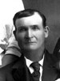

Home
Histories
Charts
Photos
Maps
Restricted
News
Info
Contact
|
(In these pages, the book  symbol is a link to a history, and the chart symbol is a link to a history, and the chart  symbol is a link to a family group chart.) symbol is a link to a family group chart.)
  |
John Dutson
and Ann Green  |
----> |
  |
John William Dutson
Born 28 SEP 1828 Aylestone Hill,Hereford,Herefordshire,England
Died 6 MAY 1887 Oak City,Millard,Utah
Elizabeth Jane Cowley
Born 2 DEC 1829 Kirk German,Isle Of Man,England
Died 23 OCT 1902 Oak City,Millard,Utah
Married 10 AUG 1850
John William also married Caroline Geneva Jenkins 7 Sep 1858
John William also married Frances Emeline Nixon 14 Apr 1873
John William also married Ann Palmer (sealed 2 Nov 1877)
|
|
Matthias Cowley
and Ann Quayle |
Children:
| * | John William Dutson - 1st child, 11 June 1851 - 11 June 1851 |
| * | John Henry Dutson - 2nd child, 1 Aug. 1852 - 31 Oct. 1854 |
 |
Rebecca Deseret Dutson
28 Jan. 1855 - 2 Feb. 1937
Married Ole Hansen Jacobson 17 March 1878
The 3rd child of John William and Elizabeth Jane Cowley Dutson
|
  |
Florence Virginia Dutson
22 Feb. 1857 - 12 Feb. 1948
Married Niels Peter Nielson 14 March 1878
The 4th child of John William and Elizabeth Jane Cowley Dutson
|
1 23 23 |
William Erastus Dutson
4 Dec. 1858 - 6 Feb. 1917
Married Annie Lyman 15 Nov. 1878
(She was later married to A. Peter Anderson.)
Married Emma Green 14 Dec. 1882
Married Martha Ellen Lovell 8 May 1889
The 5th child of John William and Elizabeth Jane Cowley Dutson
|
|
Ann Jane Dutson
7 Dec. 1860 - 6 Feb. 1950
Married Charlie Roper 13 Dec. 1888
The 6th child of John William and Elizabeth Jane Cowley Dutson
|
| * | Frank Carling Dutson - 7th child, 19 May 1863 - 6 May 1872 |
|
Richard Daniel Dutson
15 Nov. 1865 - 11 Apr. 1946
Married Cornelia Ann Roper 2 Nov. 1892
The 8th child of John William and Elizabeth Jane Cowley Dutson
|
|
Mathias Caleb Dutson
3 July 1868 - 7 Apr. 1960
Married Christiana Anderson 13 June 1895
The 9th child of John William and Elizabeth Jane Cowley Dutson
|
|
Eddy Quayle Dutson
29 Sep. 1870 - 17 Jan 1957
Married Annie Boletta Christina Anderson 20 Dec 1889
The 10th child of John William and Elizabeth Jane Cowley Dutson
|
|
Back to Jacobson Family History web pages.
|